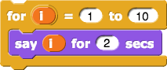
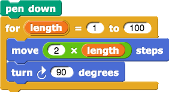
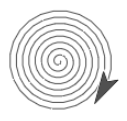
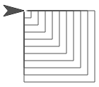
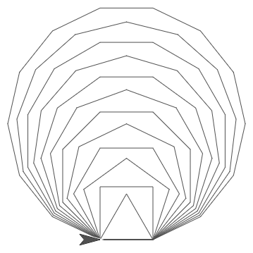
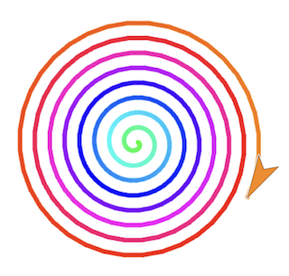

Spirals & Cabbage
We have seen three ways to repeat a set of actions.

Here's a new way. The for block (also
called a "for loop") lets you simplify long and repetitive and long and
repetitive and long and repetitive scripts.

Note: this lab may be easier if you do both "Row of Houses" and "Row of Dollhouses" first!
-
Build and run this script. What happens? Make sure that it works as you expect.
 -
Modify your script so that the sprite says 0, 2, 4, 6, 8, ... up to 30. Remember that you can do math in Snap!, using:
-
Build and run this script. What happens? Why does it spiral outwards?

To rename the loop variable ,
click it once.
,
click it once.
-
Switch the order of the 100 and the 1 in the
forblock. What happens? -
Change the
turnangle to other numbers like 92, 126, et cetera. What happens? -
Change the inputs to
turnandmoveto get as close as you can to a smooth spiral. -
Build a new block called
nest squaresthat uses theforandmake squareblocks. Give your new block an input so that it will draw whatever number of squares you request, with each square larger than the previous.
If you don't have themake squareblock, you'll have to build it too. The Row of Houses lab explains how. -
(optional) Build a script that draws 12 regular polygons, each with one more side than the previous one.
 -
(optional) Can you make a rainbow spiral?
 -
(optional) Below are some examples of geometric art by Maya Hayuk (left) and Kazimir Malevich (right). Make various blocks and loops, playing with pen thickness, pen hue, and more. What kind of art can you make?
The BJC lab (click here) has more artistic inspiration and activities to try. On the BJC website, be sure to check out "If There Is Time..." and "Take it Further..." boxes.

Credits
Content adapted from BJC (June 2017) U1L3 and BJC U1L3.